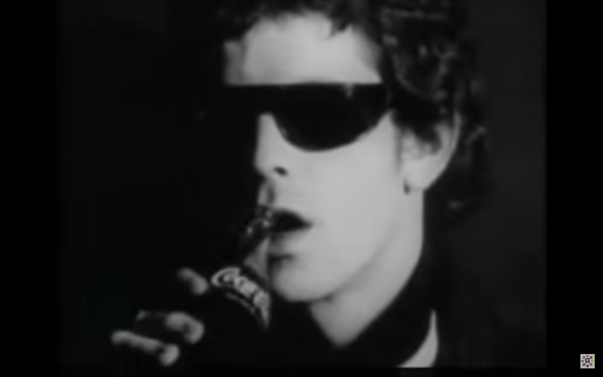

Yoko Ono

This is a page in Yoko Ono's book called, Grapefruit. Yoko plays with the readers' imagination in this book by assigning small tasks for the reader. Some of the instructions migth seem absurd or wierd at the first glance, but when you actually think about it you will feel the magic. Also a very great quarantine activity.
David Wojnarowicz

This is a photograph created by David Wojnarowicz in 1978. It was shot in the New York subway wherr david himself wore a mask of the poet Arthur Rimbaud. This is a seris of photography called "Arthur Rimbaud in New York." The poet has had great influence on David and his work.
Andy Warhol

*click on the image for a clip
Between 1964 to 1966, Andy Warhol shot over 500 silent, slow-motion films on 16mm black-and-white portraits depicting the lives of popular individuals who frequented the factory, including Bob Dylan, Lou Reed, Rufus Collins, Edie Sedgwick, Allen Ginsberg and Nico. Warhol’s films were motivated by his fascination with individuals and his desire to capture the actual experience of living.